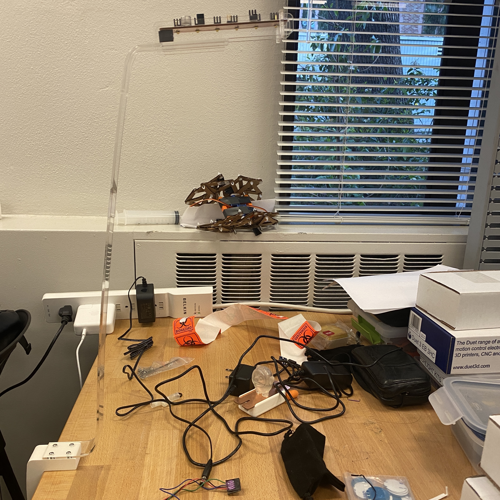
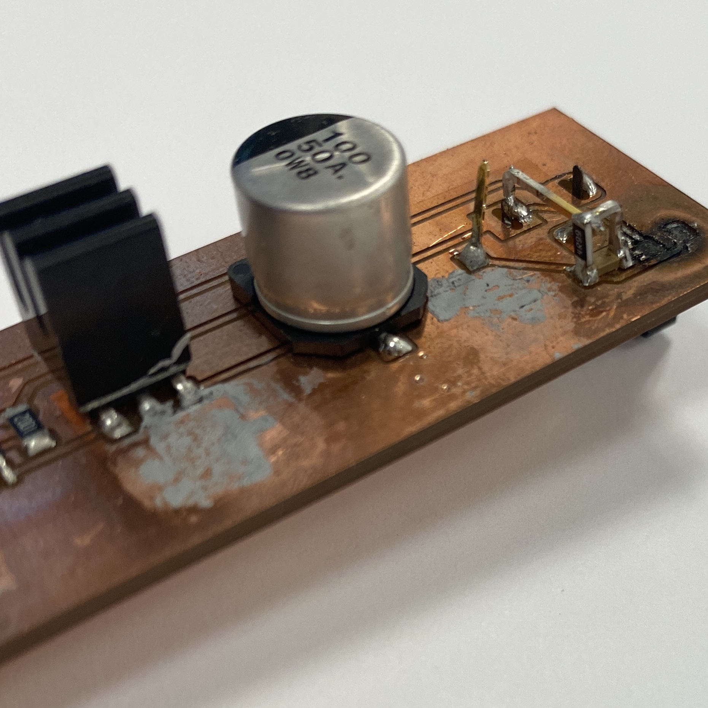
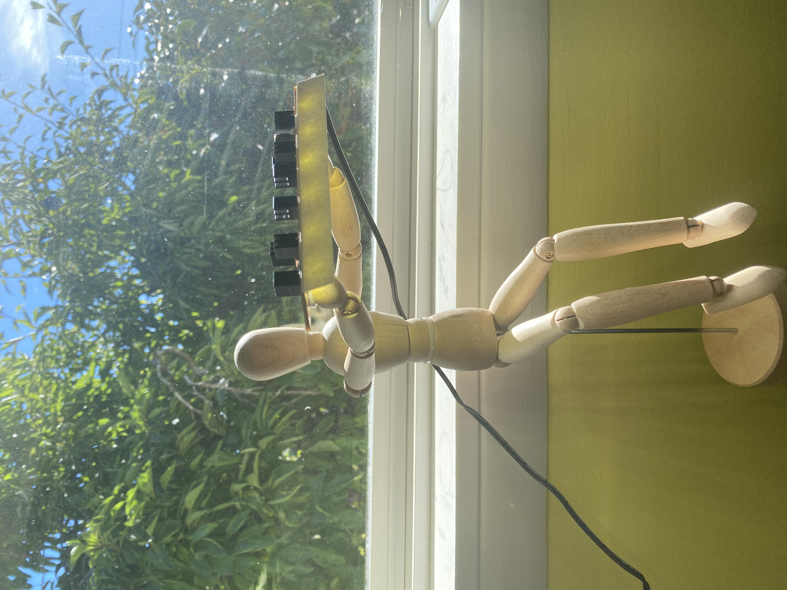

I got a new monitor last Black Friday. A friend recommended getting a light bar that hangs above the monitor. It looks like another chance to utilize my circuit making skills.
I’ve been planning and prototyping for a while actually. First I was trying to figure out how bright I want it to be. My current desk lamp uses one of those fist-sized bulb that is labeled 800 lumens. I felt it was a comfortable reading luminosity. To reach that level, the LEDs I’ve used and seen is not enough as they are usually rated as a few dozens of lumens. This light bar should be as compact as possible using the brightest LEDs.
I have a bike flash light. It only has one LED as light source when I look into its head. I searched ‘flash light LED’ on the internet and found out about this series of ultra-bright LEDs on Digikey. I ordered some that has a comfortable temperature for my reading habit. I also learned that they have a line that has the range of wavelength suitable for plant growth. This will be my next grand plan, a plant plan!
I built the circuit in KiCAD with one LED first. It’s my first time adding surface-mount transistors to my circuit and soldering such a narrow footprint on the LED. I ended up making two versions of this debugging board to figure out these two problems. For the second problem, I find using this kind of low-temperature soldering paste helpful. And the trick is that since it requires such a low temperature to reflow, heating the footprint on one leg of the LED will generate enough heat to reflow the paste on the other leg as well.

I made a acrylic base for it for a floating vibe. It lacks certain degrees of freedom in adjusting its position and actually ended up hurting my eyes when I sat down.
One thing I didn’t take into consideration is the power limit of resistors. I burned the current limiting resistor and had to order high-power resistors. The copper trace was destroyed too, so I had to be creative.
 Inspired by Mohit Bhoite: http://www.bhoite.com/sculptures/And one day I just found the perfect base for this light bar.
Now it sits right above my monitor.